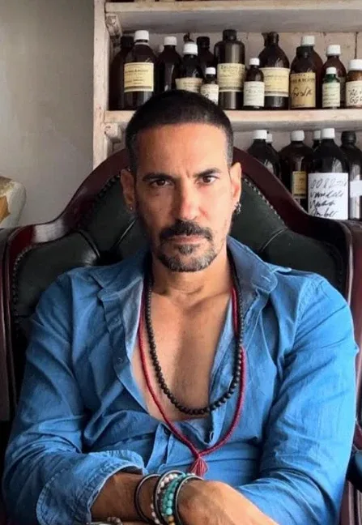
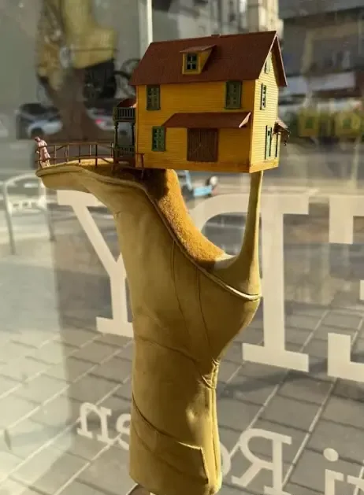
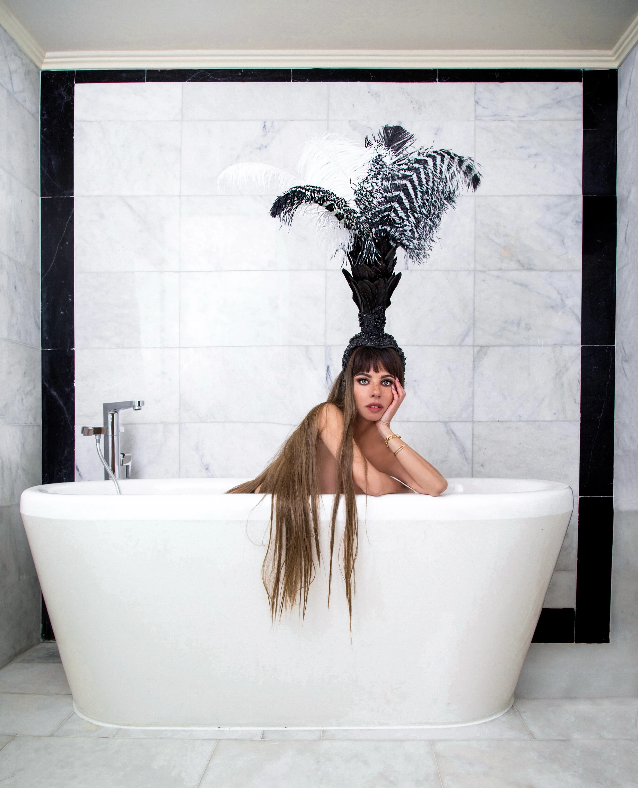
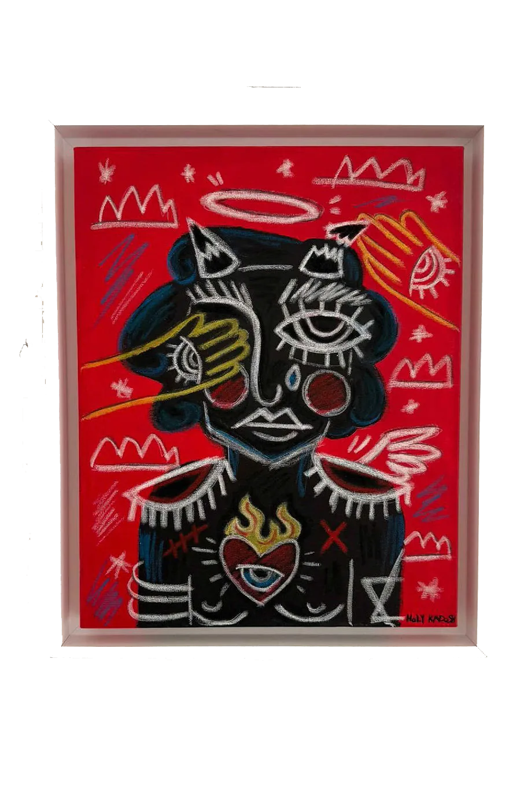

מותג הבישום פתח גלריה
בכיכר המדינה: 100%
מהרווחים הולכים לאמנים
מריח כמו אמנות: מותג הבוטיק ״זלינסקי רוזן״ נכנס לשוק האמנות עם חלל חדש בתל אביב.
התערוכה הראשונה, באוצרותה של קורין אברהם, עוסקת בבדידות בעידן של שפע ומציגה עבודות של יוצרים ישראלים. ויש גם מודל כלכלי מפתיע.
מותג הבישום והלייף-סטייל ״זלינסקי רוזן״ מרחיב את פעילותו לתחום האמנות. המהלך, ביוזמתו ובהובלתו של ארז זלינסקי רוזן, כולל השקת גלריות חדשות בתל אביב. הגלריה החדשה נחנכה השבוע בכיכר המדינה, ומצטרפת לחלל האמנות של המותג שכבר פועל ברחוב דיזנגוף.
על פי הצהרת החברה, המיזם יפעל במודל פילנתרופי חריג בנוף המקומי: הגלריות לא יגבו עמלות תיווך, וכל ההכנסות ממכירת היצירות יועברו ישירות לאמניות ולאמנים המציגים.
מטעם ארז זלינסקי רוזן נמסר כי החיבור בין העולמות הוא טבעי למותג: ״הקשר בין אמנות לבישום אינו השראה חיצונית, אלא חלק מה-DNA שלנו. כפי שהבשמים נולדים מתוך דיאלוג חי בין חומר לחוויה, כך גם מחלקת האמנות והגלריות מבקשות להיות מרחבים שבהם האמנות מתקיימת כיצירה חיה נושמת, משתנה ומתפתחת״.

ארז זלינסקי רוזן/באדיבות ארז זלינסקי רוזן

תערוכת הפתיחה, הנושאת את השם ״בדידות בתוך סביבה תוססת״ (Exhibition Volume 1), עוסקת בחוויה אנושית מורכבת: בדידות שאינה נובעת משקט או היעדר, אלא דווקא מעודף גירויים, רעש ומסכות.
מי שאמונה על אוצרות התערוכה היא קורין אברהם. אברהם, שמוכרת בוודאי ללא מעט נשים בישראל (ובעולם) בזכות בלוג האופנה ״Ya Salam״, פעלה בשנים האחרונות כמשפיענית אופנה בינלאומית, וכיום משמשת כאשת הקריאייטיב ומנהלת תחום האמנות במותג.

קורין אברהם/אלי בוחבוט
בין העבודות הבולטות בתערוכה ניתן למצוא את הצילום של זוהר שטרית, המציג פני ליצן מטושטשים כבחינה של הניתוק שבין המסכה לרגש; את פסליה של טל נהוראי, המשתמשת באסתטיקת פופ-ארט כדי להציג אובייקטים מנחמים כמו בקבוק חימום וכדורים כביקורת על תרבות ה״אושר המיידי״; את עבודותיו הסוריאליסטיות של קוסטה מגרקיס, המציג יצורים היברידיים ודמויות כמו במיצב ״high hill״ המייצג עמידה מעל ההמולה אך בבדידות מוחלטת; ואת עבודותיה של גל פולק, המשתמשת בטכניקת שיבוץ קריסטלים סיזיפית ונוצצת כדרך התמודדות ומנטרה מרגיעה מול מחשבות טורדניות.
עוד משתתפים בתערוכה: טל ״הולי״ קדוש, עדי דואק, זוהר רון, הילה לוטרשטיין, איתן גולדסון, מאיה נחום לוי וצמד האמנים האנונימיים LA RAZ PORTA.

טל ״הולי״ קדוש/קורין אברהם